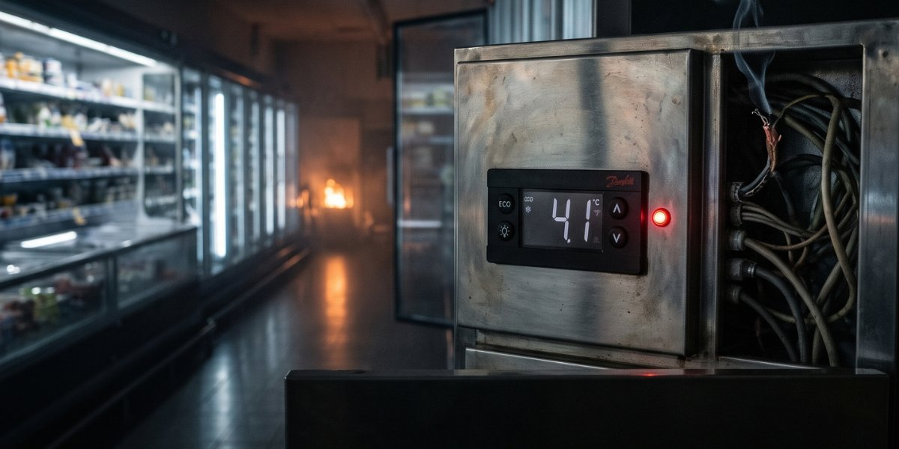

Geekotidien · Édition du 12 novembre 2026
Cyberattaque iranienne en France
Des contrôleurs de froid visés dans environ 700 supermarchés, l'Iran accusé

Dans la nuit du 11 au 12 novembre 2026, les contrôleurs de froid de plus de 700 sites de distribution en France ont été visés par une cyberattaque. Selon le ministère des Affaires étrangères, il s'agit de la première campagne cyberoffensive menée uniquement à des fins de sabotage sur le territoire national.
Les victimes comprennent de grandes enseignes (Casino, Leclerc, Coopérative U, Metro, Carrefour, Intermarché), mais aussi de petites boucheries, un abattoir, des coopératives agroalimentaires et de petites centrales hydroélectriques. L'attaque visait des contrôleurs Danfoss et modifiait leurs réglages de dégivrage. Au moins 15 départs de feu ont été recensés, et les pertes alimentaires sont estimées à plusieurs dizaines de millions d'euros.
Le 9 novembre 2026, le ministère des Affaires étrangères a attribué l'opération à l'Iran. Elle aurait été menée par l'unité de cyberoffensive Shahid Kaveh, affiliée au centre cyber des Gardiens de la révolution islamique. Le C4, centre de coordination des crises cyber, a fourni l'évaluation technique. L'attribution repose sur un faisceau d'indices, et non sur une preuve formelle.
La France a convoqué l'ambassadeur d'Iran et proposera de nouvelles sanctions européennes. Le parquet de Paris a ouvert une enquête judiciaire et demandé des mandats d'arrêt internationaux contre des dirigeants des Gardiens de la révolution. Ces mandats n'ont pas encore été délivrés.
Le + : Le nombre exact de sites touchés (environ 700 selon Next.ink, plus de 700 selon le ministère) reste à confirmer en détail.